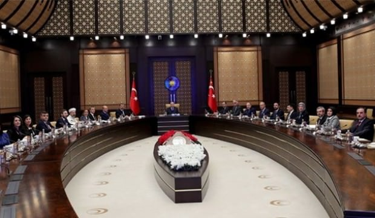
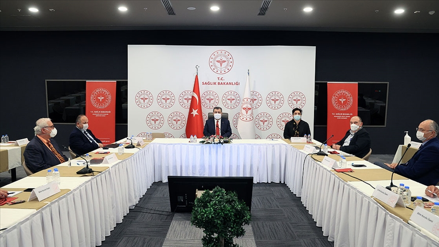
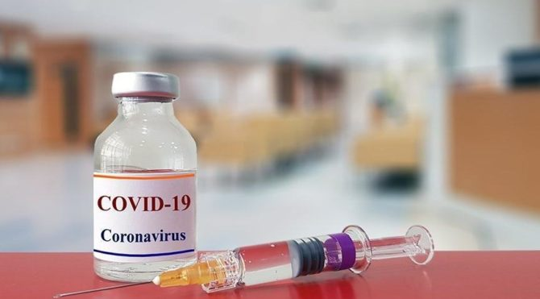

Sağlık bakanı Fahrettin koca, Cumhurbaşkanı Erdoğan başkanlığında Cumhurbaşkanlığı Külliyesi'nde toplandı.
Toplantıya, Sağlık Bakanı Fahrettin Koca, İçişleri Bakanı Süleyman Soylu, Milli Eğitim Bakanı Ziya Selçuk, Ticaret Bakanı Ruhsar Pekcan, Gençlik ve Spor Bakanı Mehmet Muharrem Kasapoğlu, Kültür ve Turizm Bakanı Mehmet Nuri Ersoy, Sanayi ve Teknoloji Bakanı Mustafa Varank, Ulaştırma ve Altyapı Bakanı Mehmet Cahit Turhan, Diyanet İşleri Başkanı Ali Erbaş, İletişim Başkanı Fahrettin Altun, Cumhurbaşkanlığı Özel Kalem Müdürü Büyükelçi Hasan Doğan, Sağlık ve Gıda Politikaları Kurulu Başkanvekili Serkan Topaloğlu ve Kurul üyeleri katıldı.
Sağlık bakanı Fahrettin koca,canlı yayın da bir toplantı düzenliyerek günümüz de etkin olan korona virüsün belirtilerine dair açıklamalarda bulundu
- İşte Fahrettin Kocanın açıkladığı Covid-19 belirtileri:
- Ateş , kuru öksürük
- Yorgunluk,boğaz ağrısı,ishal,tat alma veya koku duyusunun kaybı
- Solunum güçlüğü veya nefes darlığı
- Göğüs ağrısı veya göğüste baskı
- Konuşma veya hareket kaybı
Ciddi semptomlar:
Vaka sayımız giderek azalsada tehdit hala devam ediyor.

Fahrettin koca Türkiye halkına gösterdiği tutumdan teşekkür ederken,kurallara uymayan vatandaşları tekrardan uyardı.Bu tehditten kurtulmanın en önemli etkenin tekrar tedbir olduğunu hatırlatarak güzel günlerin geliceğini söyledi.
Cumhur başkanı Recep Tayip Erdoğan herkesin aşı olmasının gerektiğini söyledi.
Türkiye korona virüsün aşısının uygulanmasın da bir gün de 3.sıraya yükseldi şuandan itibaren vurulan aşı sayısı kişisi 696.844 oldu. Bu sayının hızlı artıcağını bekleyen fahrettin koca şuana kadar aşının önemli bir yan etkisinin olmadığını söyledi.Sayın Fahrettin koca aşının uygulanan ilk kişilerinden olarak vatandaşa güven veren bir hareket sergiledi.